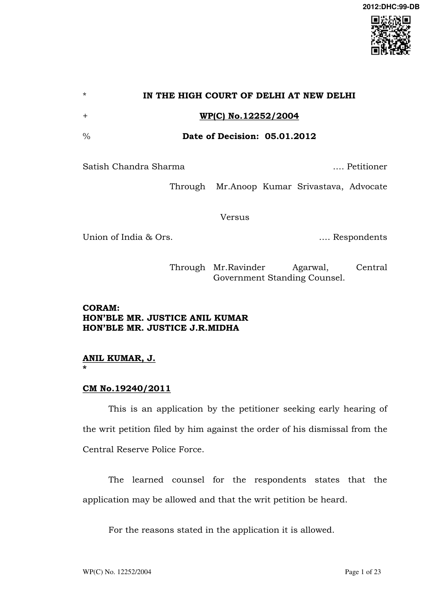

WP(C) No.12252/2004 With the consent of the parties the writ petition is taken up for hearing for final disposal. The petitioner has sought the quashing of the order of dismissal dated 19th September, 2003 passed by the Commandant 28th Battalion, CRPF dismissing the petitioner from the service and the order dated 20th March, 2004 passed by DIGP, CRPF dismissing the appeal filed by the petitioner against his order of dismissal. The petitioner has also sought the grant of salary and his dues from the date of dismissal upto the date of reinstatement. The relevant facts are that the petitioner, a constable (GD) was posted in B/28, BM, CRPF. The petitioner‟s unit was directed for PTI course serial No.88 which had to commence from 16th October, 1995. The petitioner was dispatched to CTC-I, CRPF, Neemuch, M.P. on 12th October, 1995. While undergoing the said course the petitioner had developed a knee problem and he was found unfit to continue the course at Neemuch. The petitioner, therefore, was withdrawn from the course on the order of the Principal, CTC-I, CRPF and was directed to return to his unit on 25th November, 1995. The petitioner started from Neemuch on 26th November, 1995, however, did not report back to his unit. The petitioner alleged that in the course of his journey to his unit, he suffered serious illness and he was helped by the co-passengers to alight the train at Bhopal where they got him medicines. Some passengers thereafter helped him to board the train and travel upto Mathura, where the petitioner went to his in-laws residence and got the desired treatment. The petitioner alleged that even his wife was undergoing a serious illness and that no male member was present to look after his wife. The petitioner contended that he had sent a number of leave applications dated 12th December, 1995; 15th January, 1995; 5th February, 1996; 29th March, 1996 and 1st May, 1996 by UPC to his Unit Commandant. However, a communication dated 15th May, 1996 was received by him issued by Enquiry Officer directing the petitioner to appear before the Enquiry Officer and submit his reply for the charges framed against him. The petitioner alleged that the communication dated 19th April, 1996 which was received by him on 15th May, 1996 was not accompanied by any chargesheet, statements of prosecution witnesses and documents relied on and filed during the enquiry proceedings. The petitioner reported at the battalion on 25th May, 1996. On reaching the battalion, he found that the ex-parte proceedings had been taken against him, which were at the final stage. According to the petitioner the Enquiry Officer thereafter submitted his report and the Commandant acting on the Enquiry Report awarded the punishment of dismissal from service with effect from 11th November, 1996. Aggrieved by the order of dismissal dated 11th November, 1996 the petitioner preferred an appeal to the Additional Director General which was dismissed by order dated 24th October, 1997. Against the dismissal order dated 11th November, 1996 and the dismissal of his appeal by order dated 24th October, 1997, the petitioner filed a writ petition being W.P(C) No.399/1999 before the High Court of Madras. The High Court allowed the writ petition by order dated 21st March, 2002 holding that since the proceedings were concluded ex-parte, the petitioner should be given an opportunity of being heard and the relevant documents should be served upon him. The documents were sent to the petitioner by post but they were not received by him and, therefore, in the interest of justice, the High Court set aside the order of dismissal dated 11th November, 1996 and the appellate order dated 24th October, 1997 and directed the respondents to hold a fresh enquiry so that the petitioner could be afforded an opportunity to defend himself. The High Court of Judicature at Madras also directed the respondents to conclude the proceedings as expeditiously as possible.
Pursuant to the order of the High Court of Judicature at Madras to initiate a de novo enquiry, an Enquiry Officer, Sh. Premvir Singh Rajora, Second in Command was appointed and the de novo enquiry was ordered by order dated 5th July, 2002. Before the Enquiry Officer, the petitioner filed an application to give him the memorandum of charge in Hindi and he also sought 30 days time instead of 10 days time to file the reply to the charges made against him. The Hindi version of the memorandum of charge was duly given to the petitioner.
During the de novo enquiry the Enquiry Officer recorded the statement of three prosecution witnesses and two defense witnesses and considered the documents, copies of UPC dated 12th December, 1995, 15th January, 1995, 5th February, 1996, 29th March, 1996 and 1st May, 1996; sickness certificate issued by the Medical Officer incharge SHD, Jait, Mathura dated 24th January, 1996, 26th January, 1996 and 23rd May, 1995; OPD slip issued by the Government Homeopathic Hospital, Jait, Mathura; certificate dated 25th June, 2002 issued by Dr.Naval Kishore Hospital and Research Centre, Bagh Farzana, Agra pertaining to Smt.Nirmala wife of Satish Chandra Sharma; a certificate dated 7th January, 2003 issued by the Ward Councilor regarding petitioner stating that he was sick with effect from 27th November, 1995 to 23rd May, 1996. After considering the pleas and contentions of the respondents and the petitioner, the report dated 19th August, 2003 was given holding that the charge against the petitioner was made out. However, it was also observed that the petitioner's absence was not intentional. The copy of the enquiry report was given to the petitioner on 19th August, 2003. The petitioner filed the reply to the enquiry report on 30th August, 2003. The Disciplinary Authority, Commandant 28 Battalion, CRPF, however, by order dated 19th September, 2003 awarded the punishment of dismissal from service to the respondent. While awarding the punishment of dismissal, the Disciplinary Authority considered the departmental enquiry proceedings, statements of the petitioner and the prosecution witnesses and the relevant documents. The Disciplinary Authority reasoned and held as under:-
- On going through the D.E. proceedings, statement of delinquent, prosecution witnesses and the defence witnesses/documents it is noticed that 3 prosecution witnesses two defence witnesses and the documents as per details given below produced by the said delinquent CT Satish Chandra Sharma in his defence have been examined during the course of inquiry. i) Copies of U.P.C. (Under postal certificate) date 12.12.95, 15.1.96, 5.2.96, 29.3.96 and 1.5.96. ii) Sickness certificate issued by the Medical Officer- Incharge, SHD, Jait, Mathura dated 24.1.96, 26.1.96 and 23.5.95 certifying that the said CT Satish Chandra Sharma suffering from hepatitis C GIT and recommending rest for 90 days, 58 days and 60 days respectively. iii) O.P.D. Slip issued by Govt. Homeopathic Hospital, Jait, Mathura in which he attended as out patient on 27.11.95, 1.12.95, 18.12.95, 2.1.96, 15.1.96, 23.1.96, 3.2.96, 23.2.96, 1.3.96, 6.3.96, 9.3.96, 14.3.96, 1.4.96, 4.4.95, 11.4.96, 18.4.96, 7.5.96 and 14.5.96. iv) A certificate dated 25.6.2002 issued by Dr.Nawal Kishore Hospital and Research Centre, Bagh Farzana, Agra mentioning that Smt.Nirmala, W/o Satish Chandra Sharma resident of Hathras was under treatment for Primary Starlit/from 14.8.95 to 5.12.95. v) A certificate dated 7.1.2003 issued by the Ward Councilor mentioning that the said CT Satish Chandra Sharma, resident of Hathras is under sick with effect from 27.11.95 to 23.5.96 and he could not walk and do any thing and under went medical treatment at S.H.D., Jait, Mathura. vi) Two civilian witnesses named Rajvir Singh and Dhirendra Singh appeared before the Inquiry Officer and witnessed in his defence.
- On scrutiny of the above documents submitted by the said delinquent in his defence the following lacuna, contradictions have been noticed:i) The correspondences reportedly make by the delinquent with this office as well as his company office i.e. B/28 through U.P.C. have neither been received in this office nor by his company office. However, the delinquent has been given an opportunity to check the concerned correspondence file and other relevant documents being maintained in BN Headquarter and Company Offices to ascertain/confirm whether the applications reportedly sent by him for sanction of leave are available on records or not. But no such application seeking sanction of leave are available and it is confirmed by the delinquent after checking the relevant records. Keeping in view above facts, it appears that the documents produced by the individual are fabricated in misguide the departmental proceedings. ii) On scrutiny of OPD/Prescription slips, only medicines have been prescribed by the consulting doctor and no where he has been recommended rest for the individual in the prescription slip.
It seems that he has willfully absented himself from duty and submitted fabricated certificates to misguide the departmental proceedings. iii) The OPD slips produced in his defence by the delinquent issued by the Govt. Homeopathic Hospital, Jait, Mathura as mentioned at para 8 (iii) also seems to be obtained to misguide the departmental proceedings. On scrutiny of documents it reveals that he has got himself treated as outdoor patient in a Homeopathic Hospital and was never got himself admitted in any Hospital. Had the delinquent was suffering from serious illness he would have got himself treated at any specialized hospital having adequate facilities instead opting for P.H.C./Homeopathic hospital where adequate facilities are not available. iv) Certificate issued by Dr.Nawal Kishore Hospital and Research Centre, Bagh, Farzana, Agra has also been produced by the delinquent in his defence in that his wife Smt.Nirmala, Resident of Hathras was under treatment for Primary Sterility from 14.8.95 to 5.12.95. As per the case sheet, the consultation was finally made on 8.12.95 whereas the Doctor of the said Private Clinic certified that the patient was under treatment upto 5.12.95 and signed on the Certificate on 25.6.2002. It is clearly implied that the document in his defence about his wife‟s illness/treatment is managed. v) A certificate dated 7.1.2003 issued by the Councilor of his Ward after the lapse of almost seven years after his absence from duty. The said Councilor in his certificate states that the delinquent was sick w.e.f. 27.11.95 to 23.5.96 and he was unable to even walk and he was undergoing treatment with S.H.D., Jait, Mathura. This statement is totally contradictory to the medical documents and circumstances. Had the delinquent been so serious and unable to even walk how he was going to attend medical advice from S.H.D., Jait, Mathura so frequently from his home town i.e. Hathras. vi) It again seems to be well managed plan of the delinquent to misguide the departmental proceeding even though if we admit the statement of the witnesses liberally there is no evidence immersed during above fresh inquiry at any point of time that delinquent was so seriously ill that he was unable to report for duty for such a long period.
- I have gone through the finding of the Inquiry proceeding that, the charges framed against the said delinquent No.913227883 CT/GD Satish Chandra Sharma vide Article-I to Annexure-I is proved beyond any doubt that he deserted from the Force while returning to Battalion Headquarter from CTC-I and absented himself from duty and fully agree with the opinion of the Inquiry Officer. On the basis of evidences, witnesses and documents produced during above inquiry, charge framed against above CT Satish Chandra Sharma by the prosecution is fully proved that the delinquent has deserted from the Force while returning back from CTC-I, CRPF, Neemuch to Battalion Headquarter without being permitted/any leave from the competent authority. However, I do not agree with the contradictory remark of the Inquiry Officer that the delinquent could not report back to his duty due to circumstances beyond his control, keeping in view the facts explained in para-9 above. Further, I have gone through the witnesses/documents produced by the delinquent in his defence carefully, and after going through the defence produced by the delinquent, I come to the conclusion that his willful absence from duty for such a long period was not at all justifiable. It is proved from the medical documents produced by the delinquent that he was got himself treated for his said ailment as an outdoor patient in a S.H.D., Jait, Mathura away from his home town where no specialized facility available. Had the delinquent was at all concerned about his duties being a member of the Force and really in the need of medical advice instead of opting for getting himself treated in a S.H.D./Homeopathic Hospital, he should have got himself admitted in a Hospital having better facilities. Out of many option available with the delinquent was to approach Base Hospital-I, CRPF, New Delhi which was conveniently located and well linked from his home town/Mathura where he claims to be got treated. The all document in support of his defence is fabricated and result of his after thought to cover-up his willful absent from duties.” Against the order of disciplinary authority dated 19th September, 2003, the petitioner sent an appeal to the Deputy Inspector General of Police, CRPF; the Inspector General of Police, CRPF and to the Director General of Police, CRPF. The appeal was dismissed by order dated 20th March, 2004 by the Deputy Inspector General of Police. While dismissing the appeal, the Appellate Authority also observed that a Court of Inquiry was constituted which recommended that the petitioner be declared as a deserter from the force. The appellate authority also considered the OPD slips issued by the Government Homeopathic Hospital and the other documents. It was also held that had the petitioner actually suffered from a serious illness, he would have got himself admitted to a hospital where better specialized treatment/facilities are available. In case he was not in a position to afford the heavy expenditure, he should have approached the respondents for financial help or should have consulted the Base hospital, CRPF, New Delhi which is nearer to his hometown. It was also held that all the expenditure incurred was in any case reimbursable under the Medical Attendant Rules. Against the order dated 19th September, 2003 imposing the penalty of dismissal from service and the order dated 20th March, 2004 dismissing the appeal, the petitioner has filed the present writ petition inter-alia on the grounds that the Commandant failed to take into consideration that the illness suffered by the petitioner during the journey was on account of not getting the proper treatment at the Station Hospital, CRPF; that the Commandant had also not taken the pain to see the OPD slips for outpatient departments which were issued on account of the serious illness suffered by the petitioner and the fact that it had not been taken into consideration that he had been advised complete rest; that the specialized private hospital treatment would have caused heave expenditure beyond the reach of the petitioner; that the dismissal order was on account of annoyance of the respondents to the order of the High Court of Judicature at Madras directing de novo enquiry; that the fresh enquiry report though had held that the charges were proved but it also stipulated that the absence of the petitioner was not intentional; that the punishment of dismissal from the job is almost a capital punishment, not commensurating with the mistake committed by the petitioner. The learned counsel for the petitioner has contended that since the Disciplinary Authority had differed with the findings of the Enquiry Officer, therefore, the Disciplinary Authority ought to have given an opportunity of representation to the petitioner and in order to substantiate this plea, the learned counsel has relied on Punjab National Bank & Ors v. Kunj Behari Misra, (1998) 7 SCC 84. The learned counsel for the petitioner has also relied on Yoginath D.Bagde v.
State of Maharashtra & Anr., (1999) 7 SCC 739 in support of his contention. The writ petition has been contested by the respondents contending inter-alia that the petitioner was declared unfit for PTI course due to knee pain on 8th November, 1995 and therefore withdrawn from the PTI course and was directed to return to the Headquarter of 28 Battalion, CRPF, Avadi. In the circumstances it is contended that the ailment of the petitioner was only knee pain and that the allegation that he suffered a serious sickness is incorrect. The respondents also relied on a letter dated 12th December, 1995 by the petitioner stipulating that on 25th November, 1995 he returned back from CTC-I, Neemuch and went home as he was not having any money. The plea raised in the counter affidavit dated 11th April, 2005 on behalf of respondents is as under:- “(II) contention of the petitioner that while traveling in train on 26/11/95 he fell ill at Bhopal and alighted there for treatment is a concocted story. Here kind attention is invited into the letter dated nil sent by petitioner to the unit 28 BN which was received in this office on 12/12/95. In his letter he stated that on 25/11/95 he returned back from CTC-I Neemuch and went home as he was not having any money with him.” The respondents asserted in the counter affidavit that the petitioner was given ample opportunity to defend the charges made against him in the disciplinary proceedings and both the Disciplinary and Appellate Authorities have considered all the documents and the testimonies of the witnesses and after applying their mind, they had decided to award the punishment of dismissal from service to the petitioner. It has been contended that the Disciplinary as well as Appellate Authority are invested with the discretion to impose appropriate punishment keeping in view the magnitude and gravity of the misconduct and that the Hon‟ble High Court while exercising the power of judicial review should not normally interfere with the punishment imposed by the Disciplinary/Appellate Authority nor should it substitute the inferences of the Disciplinary and Appellate Authority with the inferences, if any arrived at by the Court, unless the findings of the Enquiry Officers and the Disciplinary Authority are based on no evidence or are so perverse that a reasonable man would not infer such inferences. The respondents contended that the principles of natural justice were complied with and that the charges were proved in the de novo enquiry as well. The Disciplinary Authority has considered the findings and conclusions of the Enquiry Officer in his report; the copy of the Enquiry Officer‟s report was given to the petitioner who had also filed a reply dated 30th August, 2003. Therefore, the plea of the petitioner that the Disciplinary Authority has differed with the findings of the Enquiry Officer and the petitioner has not been given a reasonable opportunity is not correct and sustainable. The respondents further contended that the documents produced by the petitioner in defence were not found to be genuine and in any case the Disciplinary Authority and the Appellate Authority have imposed the punishment of dismissal after taking into consideration all the relevant aspects. The learned counsel for the respondents also relied on the decision of this Court in W.P(C) No.1518/2001 dated 10th December, 2004 in Laxman Singh Negi v. Union of India & Ors;; CWP No.2012/1994 decided on 16th May, 2001 titled as „Shri Nankku Kumar v. Union of India & Ors‟; CWP No.4958/2000 decided on 6th December, 2001 titled as „Khushi Ram v. Union of India & Ors.‟; W.P(C) No.6903/2002 decided on 30th September, 2004 titled as „Ex.Ct.(GD) Ravinder Kumar v. Union of India & Ors‟ to contend that judicial review is not an appeal from a decision but review of the manner in which the decision is made and the power of judicial review is meant to ensure that the individual receives fair treatment and not to ensure that the conclusion which the authority reaches is necessarily correct in the eyes of the Court. The petitioner had also filed a rejoinder to the counter affidavit filed by the respondents. In the rejoinder dated 10th February, 2006 filed on behalf of the petitioner to the allegation of the respondents that the petitioner had sent a letter dated 12th December, 1995 not indicating his illness as a cause to not reach his base unit after starting from Neemuch, but instead stating that he was not having money with him, which is why he went to his in laws‟ home, was not denied specifically. In reply to para II of the reply to the grounds of the petition the petitioner contented as under:- “(I&II). The contents of Para IX of the reply are not correct in its entity as there is 45 days of gap lie between the date of detailed for PTI course and the date whenever petitioner fell ill. The contention that petitioner deserted enroute deliberately at his own, went to his home town and remained absent from duties and the sever illness alongwith alighted at Bhopal is a concocted story, is very objectionable as petitioner in this reference has produced the medical certificates and the witnesses, that are enough to prove that situation was beyond his control.” This Court has heard the learned counsel for the parties in detail. The Disciplinary Authority while passing the order dated 19th September, 2003 has taken into consideration all the documents produced by the petitioner and the testimonies of the defence witnesses and the petitioner. Regarding the alleged correspondence, the leave applications, the petitioner was even given an opportunity to check the file and other relevant documents maintained in the Bn. Headquarter and company offices to ascertain/confirm whether the petitioner‟s alleged applications were available on records or not. It had transpired that no application seeking sanction of leave were available on the record and even the petitioner had confirmed the same that his applications were not on the record. There is no allegation against the respondents that the officials of the respondents were biased or had tampered with the official record or would have removed the alleged applications for leave sent by the petitioner. In support of his allegations that the leave applications were sent by him the petitioner has produced the UPC certificates dated 12th December, 1995, 15th January, 1995, 5th February, 1996, 29th March, 1996 and 1st May, 1996 which have not been believed.
Though before the Enquiry Officer and the Disciplinary Authority the letter dated 12th December, 1995 has not been produced, however, in the counter affidavit it was contended by the respondents specifically that in his said letter he had categorically stated that while returning on 25th November, 1995 from CTC-I, Neemuch he went home as he was not having any money and he had not disclosed anything about his illness. This plea of the respondents has not been denied by the petitioner in the rejoinder filed by him. In the circumstances, if the Disciplinary Authority has disbelieved the UPC certificates produced by the petitioner, the same cannot be faulted and there is no reason to come to a different finding by this Court. In any case in exercise of its review jurisdiction, this Court does not have to re-appreciate the evidence and arrive at its own conclusions. The inferences drawn by the Disciplinary Officer cannot be termed perverse. What is to be further seen is whether the petitioner was given reasonable opportunity during the enquiry and whether the principles of natural justice were complied with or not and that the findings or conclusions are based on some evidence. The Disciplinary Authority is the sole judge of the facts. Adequacy of evidence or reliability of evidence in the facts and circumstances cannot be permitted to be canvassed before this Court, as has also been held by the Supreme Court in B.C.Chaturvedi (Supra) relied on by the respondents. The learned counsel for the petitioner has not produced the copy of the de novo enquiry report dated 9th April, 2003. This has not been disputed by the learned counsel for the petitioner that the Enquiry Officer had also held that the charges were proved against the petitioner beyond any doubt.
Though it has been alleged in the writ petition that the Enquiry
Officer had also held that the absence of the petitioner was not intentional but was compelled by the circumstances beyond the control of the petitioner, however, there is nothing on record to substantiate this allegation of the petitioner. In any case, in response to the enquiry report dated 9th April, 2003, the petitioner had filed a reply dated 30th August, 2003, the copy of which has also not been filed by the petitioner. In the appeals filed against the order of punishment dated 19th September, 2003 to the Deputy Inspector General of Police, Inspector General of Police and to the Director General of Police, copies of which are enclosed with the writ petition as annexures P6, P7 and P8, no such ground has been taken that the Disciplinary Authority had differed with the findings of the Enquiry Officer and, therefore, the Disciplinary Authority ought to have issued the dissenting note to the petitioner. Rather the report submitted by Sh.P.S.Rajora, the Second in Command, who had conducted the de novo enquiry, had clearly set out that the petitioner had violated the rules of CRPF and that the charges framed against him were proved. If it had been held that the charges were made out against the petitioner, it could not be observed that his absence was not intentional. If the absence of the petitioner was not intentional, the charge would not have been made out. In the circumstances it cannot be held that the Disciplinary Authority had differed with the findings of the Enquiry Officer as has been alleged on behalf of the petitioner. In any case before the Disciplinary Authority, the petitioner was given a full opportunity, as he had filed the reply to the enquiry officer‟s report who has taken into consideration all the documents relied on by the petitioner and his reply in detail. The writ petition against the order of dismissal seeking judicial review is not an appeal from the decision of dismissal but a review of the manner in which the decision has been made. The power of judicial review is meant to ensure that the individual had received fair treatment and not to ensure that the conclusion which the authority reached is necessarily correct in the eyes of the Court. Reliance for this can be placed on (1995) 6 SCC 749, B.C.Chaturvedi v. Union of India & ors where Supreme Court at page 759 has held as under:-
- Judicial review is not an appeal from a decision but a review of the manner in which the decision is made. Power of judicial review is meant to ensure that the individual receives fair treatment and not to ensure that the conclusion which the authority reaches is necessarily correct in the eye of the court. When an inquiry is conducted on charges of misconduct by a public servant, the Court/Tribunal is concerned to determine whether the inquiry was held by a competent officer or whether rules of natural justice are complied with. Whether the findings or conclusions are based on some evidence, the authority entrusted with the power to hold inquiry has jurisdiction, power and authority to reach a finding of fact or conclusion. But that finding must be based on some evidence. Neither the technical rules of Evidence Act nor of proof of fact or evidence as defined therein, apply to disciplinary proceeding. When the authority accepts that evidence and conclusion receives support therefrom, the disciplinary authority is entitled to hold that the delinquent officer is guilty of the charge. The Court/Tribunal in its power of judicial review does not act as appellate authority to reappreciate the evidence and to arrive at its own independent findings on the evidence. The Court/Tribunal may interfere where the authority held the proceedings against the delinquent officer in a manner inconsistent with the rules of natural justice or in violation of statutory rules prescribing the mode of inquiry or where the conclusion or finding reached by the disciplinary authority is based on no evidence. If the conclusion or finding be such as no reasonable person would have ever reached, the Court/Tribunal may interfere with the conclusion or the finding, and mould the relief so as to make it appropriate to the facts of each case. The Disciplinary Authority has categorically given a finding that on the scrutiny of the OPD/prescription slips, it is apparent that only the medicines had been prescribed by the consulting doctor and that these prescriptions do not recommend rest for the petitioner in any manner. In the circumstances, it has been inferred that the petitioner willfully absented from the duty and submitted fabricated certificates to misguide the departmental proceedings. Regarding the OPD slips of the Government Homeopathic Hospital, Jait, Mathura it has been inferred that the documents revealed that the petitioner got himself treated as an outdoor patient and never got himself admitted. Had the alleged sickness suffered by the petitioner been so acute so as to immobilize him to an extent that he could not travel to his unit, he would not have remained as an outdoor patient, but would have instead got himself treated at any specialized hospital by getting himself admitted, as all the medical expenditure if incurred by him, was reimbursable. In case the petitioner could go to the Homeopathic Hospital as an outdoor patient, the petitioner could also go to the base hospital of the respondents for treatment. The reasoning of the Disciplinary Authority cannot be termed to be perverse. The certificate issued in respect of the wife of the petitioner has also been considered and it has been inferred that though it stipulates that the treatment given to her was for primary sterility and it was given from 14th August, 1995 to 5th December, 1995, however, final consultation was made on 8th December, 1995 and the certificate was signed on 26th June, 2002. In the circumstances, the inference by the Disciplinary Authority that the certificate regarding the wife‟s illness and treatment has been managed cannot be faulted.
Similarly, the certificate dated 7th January, 2003 issued by the Councilor of the ward after the lapse of almost 7 years since his absence from duty has also been disbelieved. The learned counsel for the petitioner has not been able to show any such facts or grounds on the basis of which it can be inferred that the inferences of the Disciplinary Authority are so perverse or unreasonable that an ordinary person would not be able to draw such inferences. The learned counsel for the petitioner has not been able to show any patent error on the face of the record or that the inferences of the Disciplinary Authority are based on no evidence at all so as to entail any interference by this Court. The plea of the learned counsel for the petitioner that the ratio of the precedent relied on by him in the case of Punjab National Bank & Ors (Supra) shall also be applicable in the case of CRPF is also not acceptable. In the instant case the Supreme Court had interpreted the regulations of the Punjab National Bank especially regulation 7 detailing the procedure as to what is to be done on submission of the enquiry report. The said regulation contemplates that if the Disciplinary Authority disagrees with the findings of the Enquiry Authority or any article of charge and records its reason for such disagreement and records its own findings on such charge, if the evidence on record is seen for the purpose, then such disagreement has to be communicated to the delinquent officer. In the case of the petitioner the Enquiry Officer gave a report that the charges against the petitioner were made out and in the circumstances the Disciplinary Authority has not disagreed with the report of the Enquiry Officer. The Enquiry Officer is alleged to have, however, submitted that this was not intentional. Against the Enquiry Officer‟s report the petitioner made his representation which was considered by the Disciplinary Authority who has given cogent reasons in his order to infer that the documents relied on by the petitioner were not reliable. Consequently on the basis of the ratio of Punjab National Bank & Ors (Supra) the petitioner is not entitled for any relief.
Similarly, in Yoginath D.Bagde (Supra) it was held that the Disciplinary Authority before confirming its final opinion has to convey to the charged employee its tentative reasons for disagreeing with the findings of the Enquiry Officer. In the instant case relied on by the petitioner the show cause notice issued to the delinquent officer did not meet the requirement that the disagreement has to be tentative. If the Disciplinary Authority had taken a final decision to disagree with the report of the Enquiry Officer before issuing the show cause notice then the requirement of a tentative disagreement is not made out. Apparently the case relied on by the petitioner‟s counsel is distinguishable. In the totality of facts and circumstances the orders of Disciplinary Authority and the Appellate Authority suffers from no illegality, irregularity or any such perversity which shall require the interference by this Court in exercise of its jurisdiction under Article 226 of the Constitution of India. The writ petition is without any merit and it is, therefore, dismissed.
ANIL KUMAR, J.
J.R.MIDHA, J. January 05, 2012. „k‟